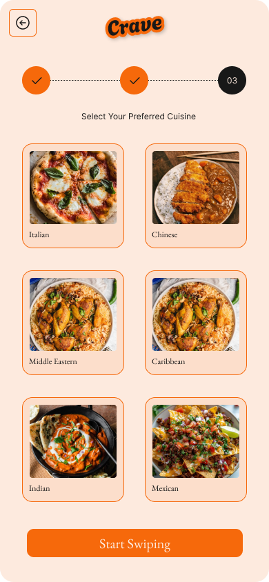
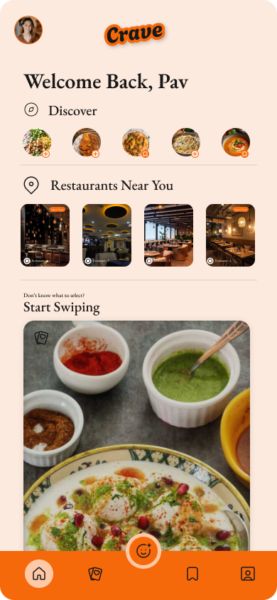
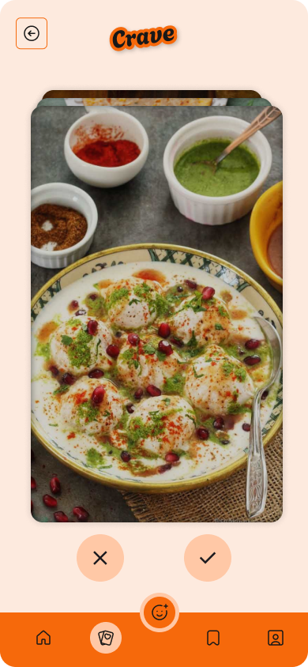
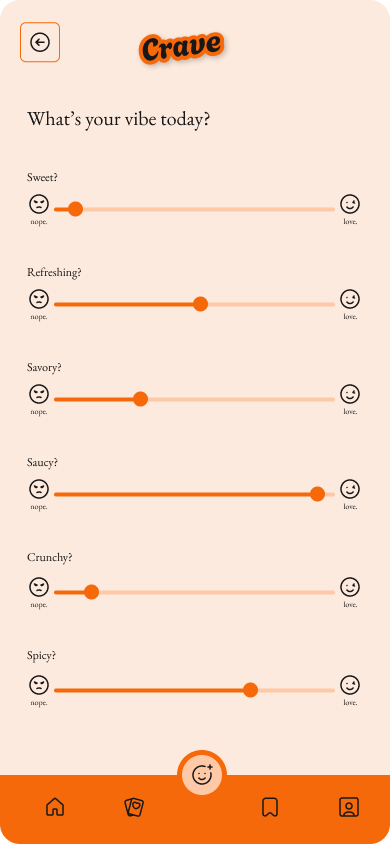
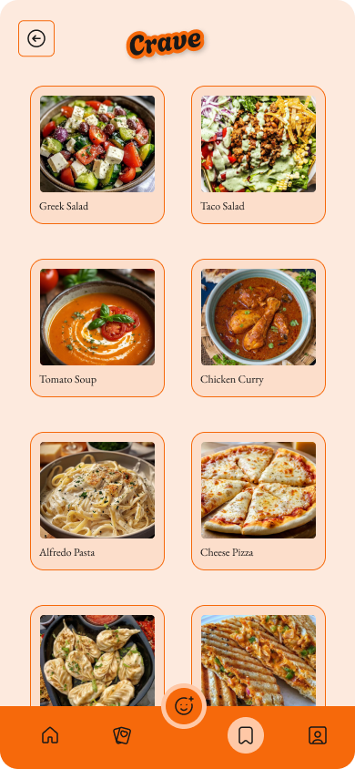
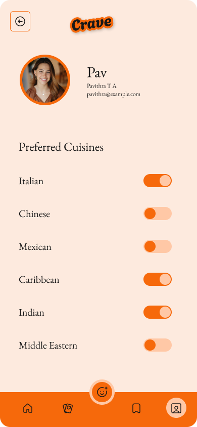

Signup Screen – Select Your Preferred Cuisine
The onboarding experience begins with a taste-first approach — users pick their favorite cuisines upfront. Large, tappable cards and a bright CTA make the process intuitive and snackable.
Swipe-Based Food Discovery App
Tools Used: Figma
Crave is a conceptual mobile app designed to help users discover food based on cravings and emotional states, not just cuisine types.
Borrowing the addictive swipe gesture from Tinder, Crave transforms food discovery into a playful, sensory-first experience that prioritizes visuals, moods, and delight.
This project was developed as a self-initiated UX experiment to explore how emotional design and unconventional interactions can reshape everyday decisions — like “What should I eat?”
Traditional food delivery apps often force users to choose by cuisine or restaurant. But what about those moments when you don’t know what you want but you just know you want something sweet, creamy, or spicy?
How might we help users discover food based on cravings and emotions, rather than rigid categories and logical filters?
Crave’s visual identity blends warmth, flavor, and fun — echoing the spontaneity of street food and the addictiveness of swipe-based interfaces.

The onboarding experience begins with a taste-first approach — users pick their favorite cuisines upfront. Large, tappable cards and a bright CTA make the process intuitive and snackable.

The home screen surfaces dishes and restaurants nearby dynamically, with clean icon-based navigation and subtle personal touches for a welcoming user experience.

One dish at a time. Swipe left to skip or right to crave. Inspired by Tinder, this reduces choice overload and makes food discovery more fun and spontaneous.

Use sliders like Spicy, Refreshing, Sweet, and Comforting to define your current craving. A sensory-first approach to navigating food moods.

Every right swipe gets saved here. A visual recipe board of all your past cravings, helping build a personal flavor library over time.

Edit your food preferences, manage your cuisines, and control your flavor journey. The profile reinforces user agency and personalization.
The quick brown fox jumps over the lazy dog. Aa Bb Cc Dd Ee
The quick brown fox jumps over the lazy dog. Aa Bb Cc Dd Ee
Crave was a playground for designing with the senses like flavor, feel, and fun. It challenged me to think beyond functional UX and into the realm of delight and desire. The swiping may feel silly at first, but that’s the point: food should feel good.